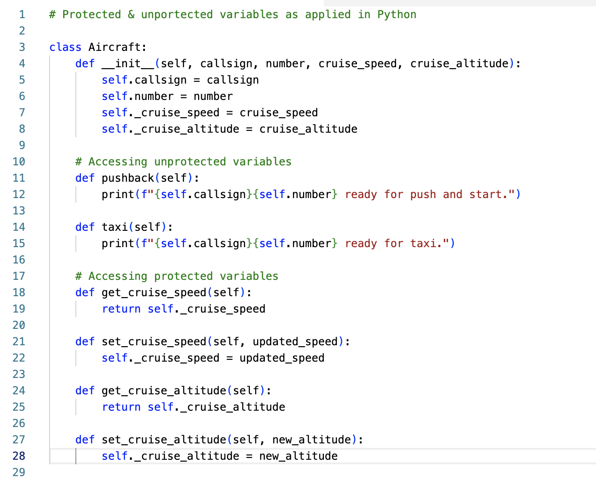
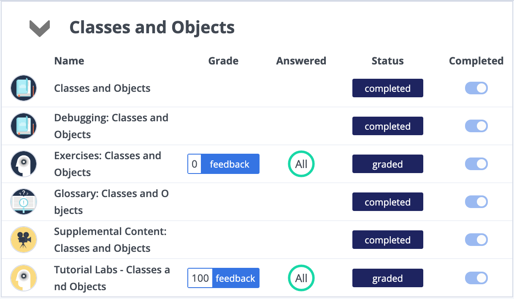

Unit 1: Artefacts
Collaborative Discussion
Part of this unit was to discuss and rank factors that influence the reusability of object-oriented software.
Initial Post

Feedback


Comments
Although there were noticable differences, many of us ranked the factors in a similar fashion. Something that caught my eye specifically was that the ranking of these factors was not soley based on the article itself, but also the angle from which the ranking was approached. As is to be expected, as a group of people working in various professional fields, our ranking was heavily influenced by our own experiences. In my case, defining requirements for simulation software played in a huge role in how I looked at the task at hand.
Article Review
Review the article by Di Silvestro [&] Nadir (2021) Discuss one aspect of this article which you find unexpected.
This article discusses and investigates the utilization of ePortfolios within the realm of graduate adult education, with a focus on their potential to promote more reflective and deeper learning outcomes. The authors of this article acknowledge the scarcity of literature on the topic and address this gap through their research. They draw upon various studies and proponents, such as John Zubizarreta and John Dewey, who have championed the use of ePortfolios for this purpose.
The article also emphasizes the correlation between reflective learning, transformative learning, and deeper learning. Furthermore, the authors posit that ePortfolios can serve as more than just a compilation of student work and that their true value lies in the reflection documented within them.
As a university student, my understanding of portfolios, specifically ePortfolios, has evolved from a previous perception of them as a mere collection of one’s accomplishments to a valuable tool for reflective practice and documenting personal growth. The authors of this article highlight the importance of reflection within ePortfolios and the ability to track one’s progress over time, which was not previously emphasized during my high school education. This shift in perspective highlights the importance of proper implementation and understanding of the purpose and potential of such tools in education.
References:
Di Silvestro, F. [&] Nadir, H. (2021) The Power of ePortfolio Development to Foster Reflective and Deeper Learning in an Online Graduate Adult Education Program. Adult Learning 32(4):154-164.
Python Program using Protected and Unprotected Values
This simple Python program demonstrates the usage of protected and unprotected variables. The "Aircraft" class represents a real aircraft. An instance of this class would be initialized with a callsign (combination between "callsign" and "number"), as well as a cruise speed and a cruise altitude.
Since the callsign is likely to change over time, I have left these two variables (callsign, number) unprotected, so that it is 'easier' to change them. The "cruise_speed" and "cruise_altitude" is, however, unlikely to change, as these values are shared by aircraft type, not by individual flight. Therefore, these variables have been protected using an underscore. I have written a "getter" and a "setter" method, that allows a system actor to access these values indirectly.
Codio
As part of my studies and practice, I completed the "Classes and Objects" module on Codio. I struggled submitting my first exercise on the platform, which is why the grade is a "0".
